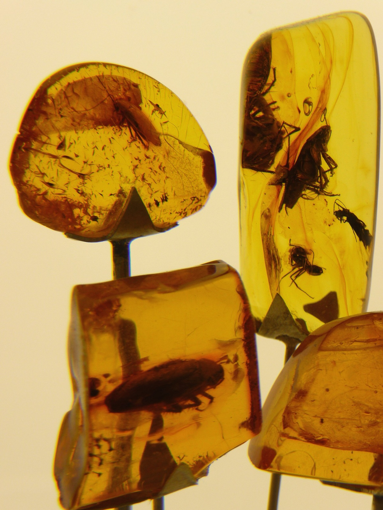

Mierzeja Wiślanaokaz 18,4 g
ok. 40 mln latwiek żywicy
3–8% masykwasu bursztynowego

Żywica spłynęła po pniu, morze przyniosła ją tutaj. Sztormy wyrzucają ją na plażę razem z wodorostami. Przebieramy ręcznie, a okazy z inkluzjami zostają w gablocie, nie w słoiku.Bursztyn bałtycki to zastygła żywica lasów, które rosły tu w eocenie. Reszta po przebraniu idzie na młyn kriogeniczny, bo w temperaturze pokojowej bursztyn się maże, zamiast kruszyć.
Trzy produkty
Skład olejku
Nie skracamy składu do „naturalnych ekstraktów”. Jeśli coś jest w butelce, jest na tej liście, w kolejności malejącej zawartości.
Oleje
Olej z pestek malinRubus idaeus seed oil71,0%
Olej z czarnuszkiNigella sativa seed oil18,5%
Surowiec i emolient
Mielony sukcynitSuccinum, frakcja <40 µm6,0%
Skwalan z oliwekSqualane3,0%
Dodatki
Witamina ETocopherol1,0%
Olejek sosnowyPinus sylvestris leaf oil0,5%